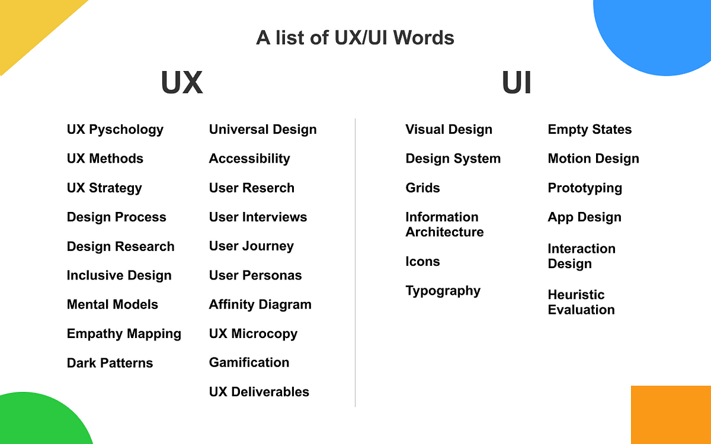

UI (User Interface) :
1. Wireframe: A basic, low-fidelity representation of a layout, focusing on structure rather than design details.
2. Mockup: A high-fidelity static design that represents the final appearance of a website or application.
3. Prototype: An interactive, clickable model of a website or app used to demonstrate functionality and flow.
4. Layout: The arrangement of elements on a page, including headers, footers, sidebars, and content areas.
5. Grid System: A structure made up of intersecting horizontal and vertical lines to arrange content consistently.
6. Responsive Design: An approach where the design adjusts seamlessly across various screen sizes and devices.
7. Typography: The art of styling text, including fonts, sizes, spacing, and hierarchy.
8. Color Palette: A selected set of colors used to ensure a cohesive look and feel throughout the design.
9. Icons: Simple, graphic elements representing actions, objects, or ideas to improve navigation and comprehension.
10. Navigation: The set of tools (menus, links, buttons) that help users move through the website.
UX (User Experience) Terms:
1. User Flow: The path taken by a user to achieve a goal within a product, like purchasing an item or signing up.
2. Persona: A fictional representation of a target user based on research, used to guide design decisions.
3. User Journey: The sequence of steps a user takes to complete a task, highlighting pain points and opportunities.
4. Accessibility: Designing products that are usable by people with disabilities, following standards like WCAG.
5. Usability Testing: Evaluating a product’s ease of use by observing real users interacting with it.
6. Heuristic Evaluation: A method where designers identify usability issues based on established best practices.
7. A/B Testing: Comparing two versions of a webpage to determine which performs better based on user interactions.
8. Information Architecture (IA): The organization and labeling of content to help users find information efficiently.
9. Call to Action (CTA): Interactive elements like buttons or links designed to prompt users to take a specific action.
10. Microinteractions: Small, engaging animations or feedback (e.g., a button changing color on hover) that enhance user experience.